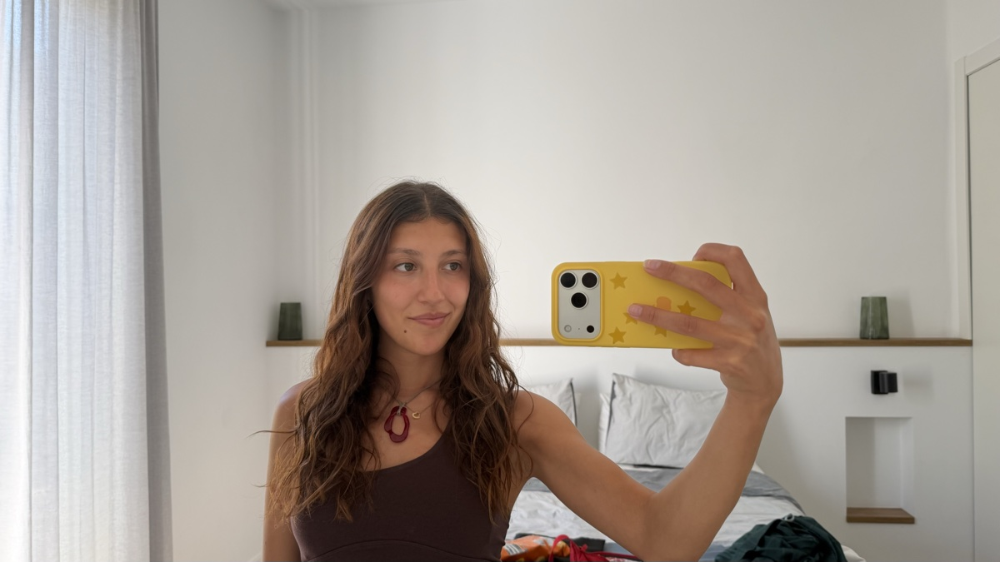

About me,
I'm Valentina — a Data & AI engineer with a biomedical engineering degree and an operations past, based in Buenos Aires, Argentina. I like understanding how things work, and then making them work better.
Off the clock you'll usually find me with a book — the reading log below keeps the receipts. I believe continuous learning is the key, and this site is my little corner to practice it: part portfolio, part playground, always under construction.
Resume
the official story
Data & AI engineer with a biomedical engineering degree who started on the operations side. After more than a year running AI deployments for clients at Darwin AI, I moved to the Data & AI team, where I build and operate the platform the company runs on: Dagster pipelines, dbt models on Snowflake, reverse ETL to HubSpot and LLM-based internal tooling. I bring the rigor of a field where data integrity is non-negotiable, and the client-side experience to model what teams actually need.
EXPERIENCE_
-
Jul 2026 — Present
Data & AI Engineer · Darwin AI
- Build and run Darwin's data platform: self-hosted Dagster (OSS) on AWS orchestrating a 400+ model dbt project over 38 sources on Snowflake, with scheduled jobs, run-status sensors and Slack alerting.
- Design and ship dbt models end to end (staging → facts, dimensions, marts) with data quality tests, docs, snapshots, incremental models and seeds.
- Built the customer effort score: a dbt model ranking 12 normalized signals per account, weekly snapshots, reverse ETL into HubSpot and an MCP tool exposing it to AI agents.
- Hardened reverse ETL (per-destination assets, retries with backoff, aggregated failure alerts) and shipped Slack alerts for executives plus a weekly adoption leaderboard.
- Build and maintain internal AI agents, skills and MCP tools adopted by Operations, Sales and Finance, and Metabase dashboards on usage, adoption and revenue.
-
Aug 2025 — Jul 2026
AI Operations Lead · Darwin AI
- Promoted for client management and process optimization; led a team of 10+ people in Operations.
- Owned a portfolio of client accounts end to end (onboarding, adoption and retention of deployed AI agents), running weekly health checks and business reviews and flagging churn-risk signals early.
- Kept client data accurate through validation protocols, quality controls and KPI dashboards reported to leadership with corrective actions.
-
Mar 2025 — Aug 2025
AI Operations Executive · Darwin AI
- Audited client implementation data for consistency and model performance, validated new functionalities before deployment and gave technical support on the AI built.
-
May 2024 — Nov 2024
Operations Intern · Amcor Rigid Packaging
- Designed validation scripts and dashboards to catch and correct data inconsistencies in production metrics; supported quality control by monitoring process deviations.
-
Jul 2023 — Dec 2023
Pediatric ICU room-pass digitization · Hospital Universitario Austral
- Worked with clinical staff to ensure data accuracy during the digitization of patient room processes; validated backend data integrity and compliance with hospital information standards.
EDUCATION_
Jan 2021 — Dec 2025Degree in Biomedical Engineering
Universidad Austral, Buenos Aires.
Thesis: hypoxia markers vs PD-L1 expression in TCGA lung cancer cohorts (LUAD/LUSC), in R.
Certifications & courses
- dbt Fundamentals — dbt Labs, 2026
- Dagster Essentials, Dagster & ETL, Dagster & dbt — Dagster Labs, 2026
- Database Design and Basic SQL in PostgreSQL — University of Michigan via Coursera, 2026
- Deep Learning: Neural Networks from Scratch — UTN FRBA, 2025
- Cambridge First Certificate (FCE)
SKILLS_
Data engineering
Analytics & AI tooling
Programming & ML
Languages
Reading log
levels, streaks & honest reviews
Game
PRESS START
a game will live here. we haven't picked one yet — something with books? a puzzle? ideas welcome ✎
under construction
Socials